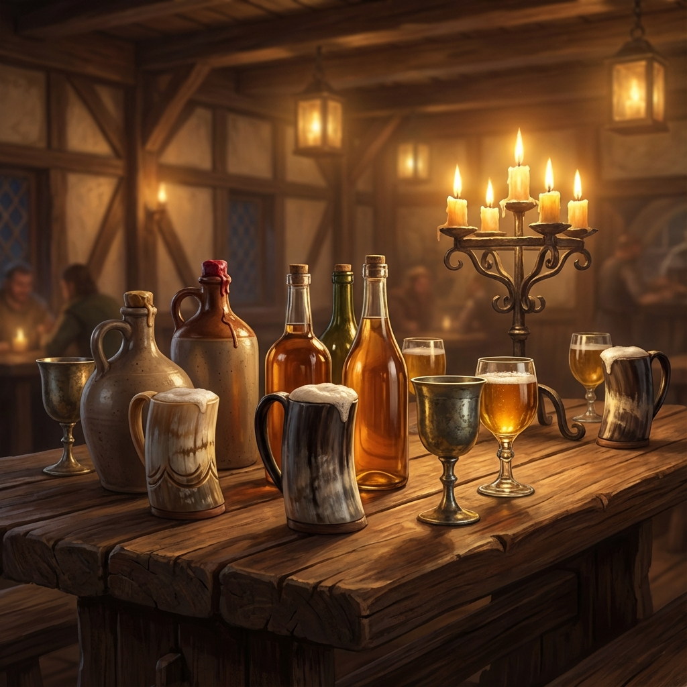
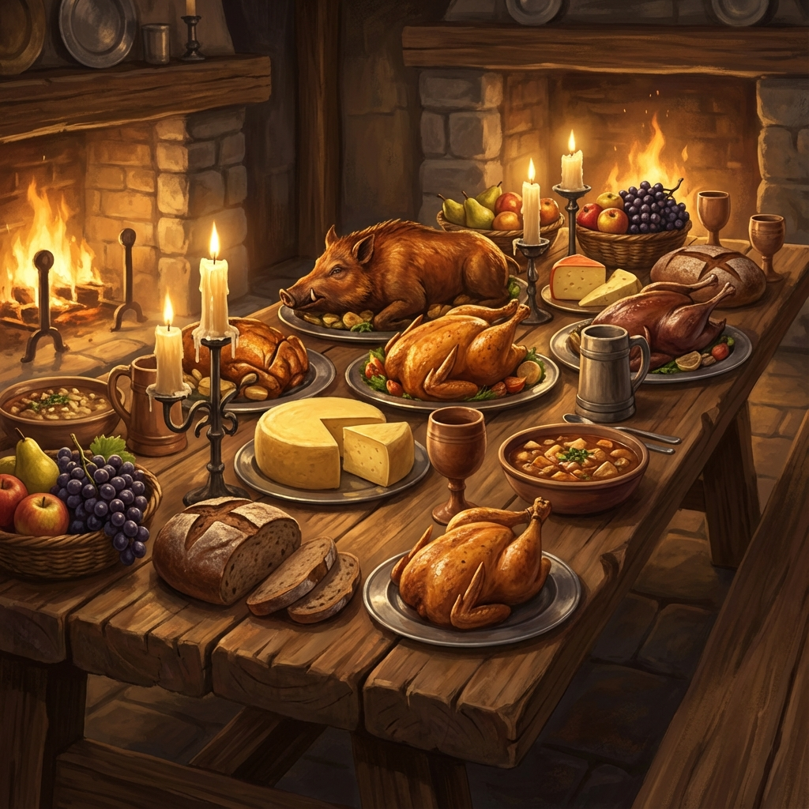

Our Provisions
Elixirs & Feasts

Elixirs
Explore our 20 rotating taps of local mead, available in flights, glasses, or bottles. Also featuring crisp ciders, dark ales, and spirited concoctions.
Odin's Eye
Dry, traditional meadMaiden's Blush
Sweet, strawberry meadOrchard's Gold
Crisp, dry ciderHighland Fire
Aged single malt whiskeyThe Deerhound
Vodka, mead, tart grapefruitBlack Stag Stout
Dark ale, notes of coffee
The Feast
Hearty fare to fill the belly and warm the soul.